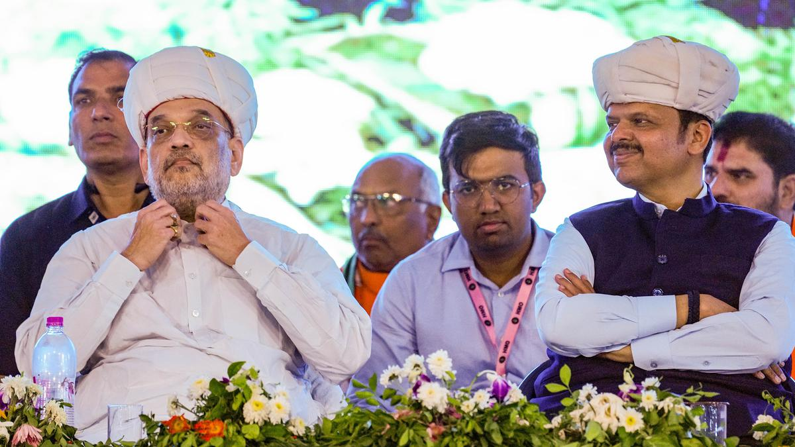
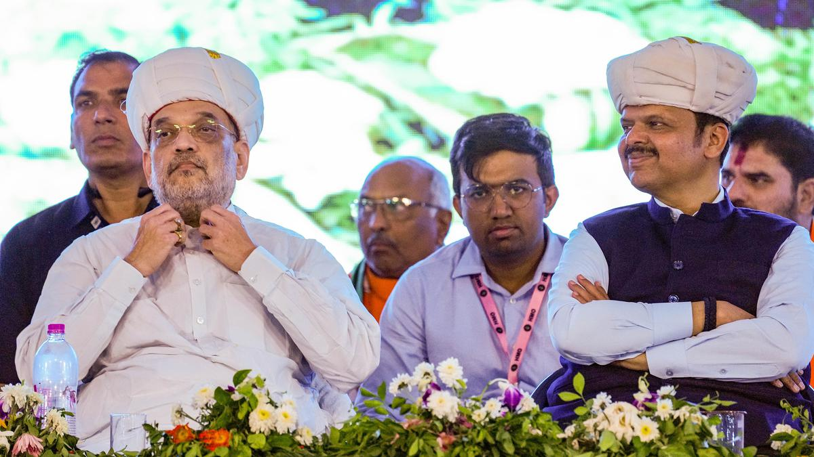

Amit Shah to Visit Chennai Amid AIADMK-BJP Alliance Buzz
Published: April 2, 2025 | 10:27 PM
Strategic Visit to the South
Union Home Minister Amit Shah is expected to land in Chennai this weekend, sparking intense political speculation across Tamil Nadu. The visit comes at a pivotal time as the 2026 assembly elections loom large, and talks of a revived AIADMK-BJP alliance gain momentum. Shah's arrival has triggered both excitement and skepticism within local political circles, especially since this is his first major outreach to Tamil Nadu in several months.
Alliance Talks Heating Up
The BJP and AIADMK have shared a turbulent alliance in the past, having parted ways ahead of the 2024 general elections due to unresolved differences on seat-sharing and campaign strategy. However, the political dynamics in Tamil Nadu have shifted significantly post-election, and both parties now find themselves reevaluating their prospects. Sources close to both camps suggest that informal talks have resumed, with Amit Shah’s visit seen as a possible catalyst to formal negotiations.
Official Events vs. Political Agendas
Officially, Shah’s itinerary includes inaugurating development projects, participating in administrative reviews, and meeting with senior law enforcement and bureaucratic officials. However, behind the scenes, BJP strategists are reportedly setting up key meetings with Tamil Nadu BJP leaders and influential members of the AIADMK to explore common ground and potential re-alignment strategies for the upcoming state elections.
Reactions from Regional Leaders
AIADMK leaders have remained tight-lipped on the matter, neither confirming nor denying any scheduled meetings with Shah. Party insiders indicate that senior figures within AIADMK see the BJP as a necessary ally to challenge the ruling DMK’s dominance. On the other hand, BJP cadres in the state view the AIADMK as an experienced regional partner that could help revive the party’s base in southern districts where it has historically struggled.
Public Rally and Messaging
Shah is expected to address a large public rally in Chennai’s outskirts, where his speech is likely to carry coded political messaging. While BJP officials claim the rally is aimed at energizing the cadre and highlighting the central government’s achievements, political analysts believe it may serve as a platform to signal reconciliation with AIADMK and present a united front against the DMK-led state government.
Implications for 2026 Assembly Elections
A re-alliance between BJP and AIADMK could significantly alter the political arithmetic in Tamil Nadu. In previous elections, the alliance managed to capture a respectable vote share, especially in western Tamil Nadu and parts of Chennai. Analysts believe that with focused campaigning and better coordination, the BJP-AIADMK bloc could mount a serious challenge to DMK supremacy in 2026.
Awaiting Official Confirmation
While no formal announcement has been made regarding a revived alliance, Shah’s Chennai visit is being closely monitored by both media and political players. If meetings between top BJP and AIADMK leaders do take place, it would indicate that both parties are inching closer to a pact, possibly with new terms that address earlier grievances. For now, all eyes remain on the weekend developments in Chennai.